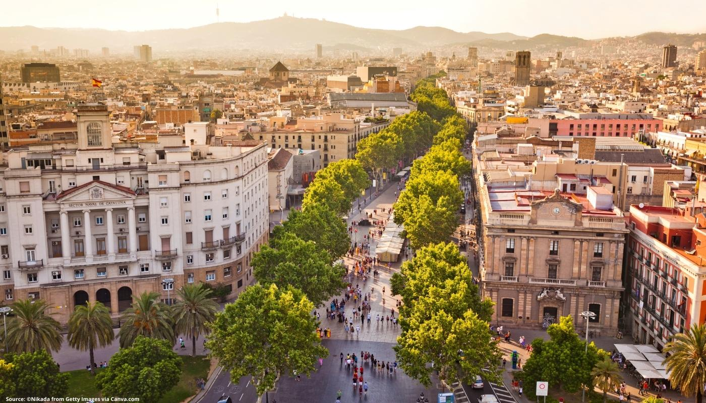
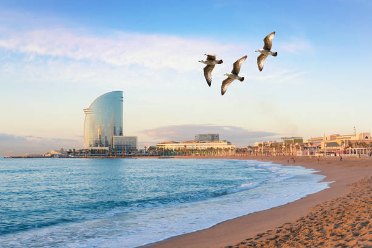
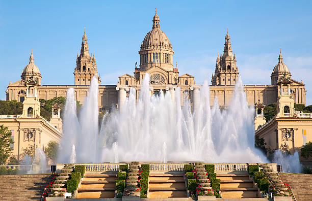

Park Guelj(Parc Guell)

Park Güell je jedno od najpoznatijih turističkih atrakcija u Barseloni.
Ovaj predivni park je dizajnirao i izgradio slavni arhitekta Antoni Gaudi u periodu od 1900. do 1914. godine.
Park je smešten na brdu Carmel, što mu pruža prekrasan pogled na grad. Njegov dizajn je inspirisan prirodom, a kombinuje razne elemente poput kamenih formacija, cveća, fontana i skulptura. Svojom jedinstvenom kombinacijom boja, oblika i tekstura, park stvara čarobnu atmosferu koja oduzima dah svih posetilaca.
Jedna od najpoznatijih atrakcija u parku je "La Salamandra", skulptura zmaja prekrivena šarenim pločicama koje su Gaudijeva zaštitni znak. Zmaj je postao simbol Parka Güell i jedan od najprepoznatljivijih simbola Barcelone.
La Rambla

Najpoznatija ulica Barselone La Rambla dugačka je 1.2km i spaja Trg Katalonije sa spomenikom Krostoferu Kolumbu. Ulica potiče iz 1766. godine i brzo je osvojila srca građana Barselone svojom lokacijom i širinom. Grad su tada karakterisale uske i krivudave ulice koje su bile posledica srednjevekovnih zidina koje su od 13-tog veka sputavale slobodno širenje grada.
Vremenom kulturne atrakcije i zabava nalaze svoje mesto u La Rambli tako da i opera (Gran Teatre del Liceu) 1847. godine dobija svoje mesto u ovoj ulici.
Danas je La Rambla prepoznatljiva po uličnim umetnicima i njihovim performansima.
Zbog veoma zanimljivog sadržaja privlači veliki broj turista i lokalnog stanovništva. Sa istočne strane La Ramble nalazi se Gotska četvrt.
Barseloneta

Barselona ima četiri velike plaže od kojih je najpoznatija i najpopularnija Barseloneta. Ova široka peščana plaža dužine oko 2 kilometra udaljena je samo 20-tak minuta hoda od glavne pešačke zone i ulice La Rambla.
National Geografic je proglasio plažu u Barseloni najboljom urbanom plažom na svetu. Barseloneta je potpuno transformisana zbog olimpijskih igara 1992. godine a pre toga je ovaj deo grada više podsećao na industrijsku zonu.
Brojni restorani i noćni klubovi nalaze se duž šetališta. Barseloneta je jedno od najboljih mesta u gradu gde možete pojesti ribu. Ne propustite i da probate tapas “bomba”.
Monžuik

Brdo Monžuik visoko 185 metara izdiže se iznad Barselone i njene trgovačke luke. Više vidikovaca koji se nalaze na ovom brdu pružaju odličan panoramski pogled na grad, luku i obalu.
Na samom vrhu brda nalazi se tvrđava Monžuik (Castell de Montjuïc) iz 17-tog veka sa koje se pruža predivan panoramski pogled na grad i luku.
Na brdu Monžuik nalazi se i glavni stadion olimpijskih igara iz 1992. godine kapaciteta 54.000 gledalaca. Napravljen je zbog olimpijskih igara iz 1936. koje se na kraju dodeljene Berlinu.
Danas je popularno mesto za održavanje koncerata na kome su nastupale brojne muzičke legende - The Rolling Stones, U2, Pink Flojd, AC/DC, Metalika, The Police, Tina Tarner, Madona, Dejvid Bouvi, Bon Žovi, Bijonse, Šakira …
Zbog velikih parkova, bogate vegetacije i ostalih sadržaja brdo Monžuik je najposećeniji rekreativni prostor u Barseloni.Do vrha brda može se stići žičarom ili dosta jeftinije autobusom.